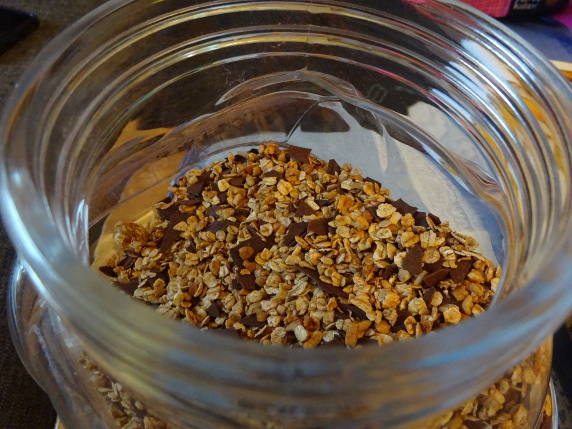

Vollkorn-Nuss-Granola

- Zubereitung: ca. 15 Minuten
- für 10 Portionen
Zutaten
- 350 g zarte Getreidevollkornflocken, z. B. Hafer, Weizen, Roggen, Dinkel, Reis
- 120 g Nussmischung
- 30 g Honig
- 100 g Zartbitterschokolade
- 1 EL Kakao
- 1 Prise Salz
- 1 Prise Zimt
Zubereitung
- Den Backofen auf 160° Celsius vorheizen. Die Nüsse grob hacken. Den Honig in einem Topf leicht erwärmen, bis er flüssig ist. Gehackte Nüsse, Getreideflocken, Salz und Zimt untermischen. Die Masse auf ein mit Backpapier ausgelegtes Backblech verteilen.
- Im Backofen auf der 2. Schiene von unten circa 20-25 Minuten rösten. Währenddessen einmal wenden. Gut abkühlen lassen. Die Zartbitterschokolade fein hacken und zusammen mit dem Kakaopulver unter die abgkühlte Müslimischung mengen.
Anmerkungen: Die Müslimischung hält sich in einer Dose oder einem Glas dicht verschlossen circa drei bis vier Wochen.